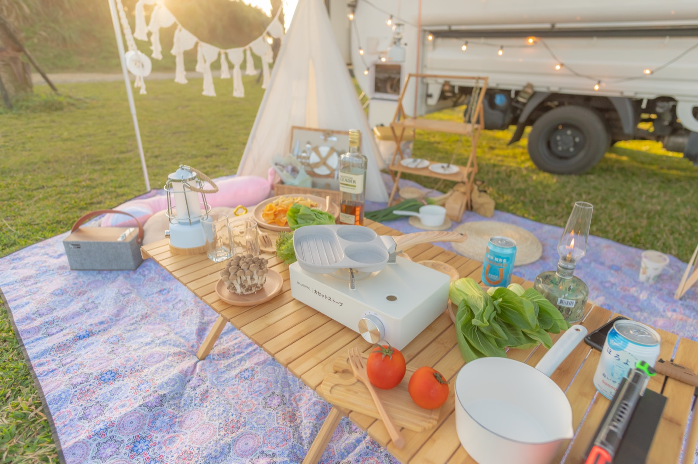
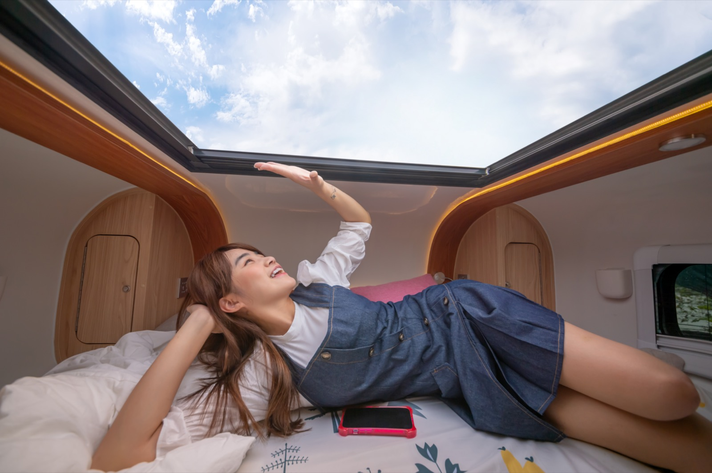

台北露營車出租，可指定地點送車
主打台北露營車出租，並支援桃園、新竹區域的指定地點送車。你不必先繞路取車，就能把車安排在約定地點交車，適合想直接開始露營車旅行的旅客。
以台北露營車出租為主，提供台北、桃園、新竹指定地點送車服務。兩張雙人床、獨立衛浴、冷暖空調，適合親子、情侶與朋友一起體驗三天兩夜露營車旅行。
揪好森提供以台北露營車出租為主的服務，也支援桃園與新竹指定地點送車。和一般必須自行取車的台北露營車租借不同，我們更重視新手友善與交車便利，讓想體驗露營車旅行的客人，不用先研究複雜流程，也能從台北出發展開三天兩夜的自駕行程。
延伸閱讀： 台北露營車出租怎麼選、 露營車三天兩夜行程、 露營車出租價格解析、 台北桃園新竹露營車出租重點
指定地點送車、床位與衛浴、生活設備與三天兩夜方案一次看懂
主打台北露營車出租，並支援桃園、新竹區域的指定地點送車。你不必先繞路取車，就能把車安排在約定地點交車，適合想直接開始露營車旅行的旅客。
車上配置兩張雙人床與獨立衛浴，親子、情侶或好友出遊都能有固定睡眠與盥洗空間。若以可睡 4 到 6 人露營車出租的需求來看，這台車在空間與動線上較容易上手。
車內具備冷暖空調、冰箱與基本餐具，並可依行程搭配營區或定點使用。對第一次規劃新手露營車使用教學步驟的人，也更容易在三天兩夜內把作息建立好。
方案以三天兩夜露營車行程為核心，讓你有足夠時間移動、休息與體驗景點。若你正在找台北露營車租借推薦並希望節奏不要太趕，這種天數會比單日往返更合適。
如果你正在找台北露營車出租價格，這台露營車以三天兩夜方案為主，適合第一次體驗露營車自駕旅行的旅客，也適合親子、情侶與朋友一起出發。
適合平日慢遊、避開人潮。
最熱門檔期，建議提前詢問檔期。
連假與特殊節日，以檔期為準。
押金 NT$5,000｜可攜帶寵物（清潔費 NT$800 / 單次）
| 項目 | 價格 |
|---|---|
| 延長天數（平日） | NT$2,800 / 日 |
| 延長天數（假日） | NT$4,800 / 日 |
| 加時費 | NT$300 / 小時 |
最低租期為三天兩夜，適合慢遊與完整露營體驗
把露營變舒服：不用搭帳也能保有戶外氛圍
有浴室的露營車更安心，晚上不怕找不到廁所。
把節奏放慢，留給你們的晚餐、音樂與風景。
最多可睡 5 位大人或 4 大 2 小，三天兩夜剛剛好。
不用搬裝備、不用搭帳，指定地點送車即可開始。
把質感與好玩一次帶上：戶外生活風格＋影音娛樂
木桌椅 / 三角帳 / 野餐籃 / 瓦斯爐 / 燈串 / 波希米亞裝飾 / 木質餐具

Switch 主機 / 藍牙喇叭 / 投影機 / 投影布幕 / 卡拉 OK 麥克風

台北露營車出租實景參考；完整規格請至「車內規格與設備」
台北露營車出租可指定地點送車，到點後即可開始車泊旅行。

露營車內部空間可用餐、休息，也可變成睡眠區。

兩張雙人床的露營車出租配置，適合 4～6 人旅行。

附獨立衛浴與冷熱水，對新手露營車租借更友善。